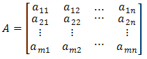
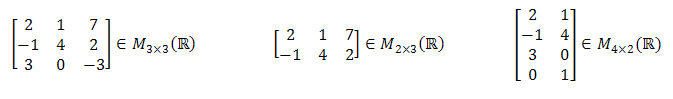
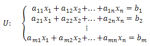
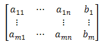
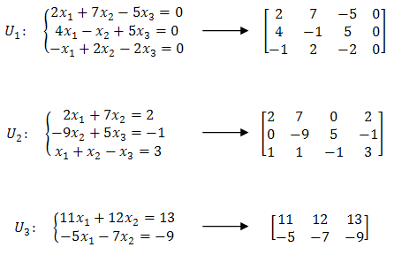

Formalna definicja macierzy
Definicja
Macierzą \(m \times n\) (tzn. o \(m\) wierszach i \(n\) kolumnach) o wyrazach w zbiorze \(X\) nazywamy tablicę:  gdzie \(a_{i,j}\in X\) dla \(1 \le i \le m\), \(1 \le j \le n\). Rzędy poziome macierzy \(A\) nazywamy wierszami, rzędy pionowe
kolumnami.
Zbiór wszystkich macierzy \(m \times n\) o wyrazach ze zbioru \(X\)
oznaczamy \(M_{m \times n}(X)\). Na przykład \(M_{m \times n}(\mathbb{R} )\)
oznacza zbiór wszystkich macierzy rzeczywistych o wymiarach \(m \times n\).

Macierze bardzo często stosujemy jako uproszczony sposób zapisu układów równań.
Definicja
Układowi równań:  możemy przypisać macierz:  Taką macierz nazywamy macierzą rozszerzoną układu \(U\).Macierz:
 nazywamy macierzą
współczynników układu \(U\).
nazywamy macierzą
współczynników układu \(U\).
Przykładowy układów równań i odpowiadających im macierzy: 